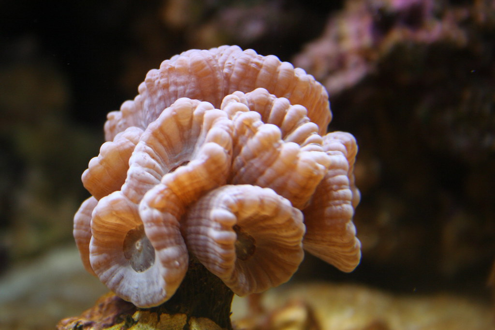
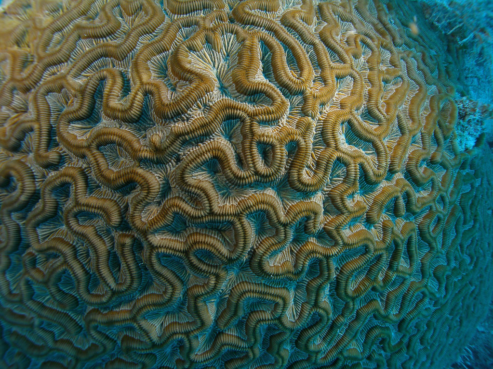
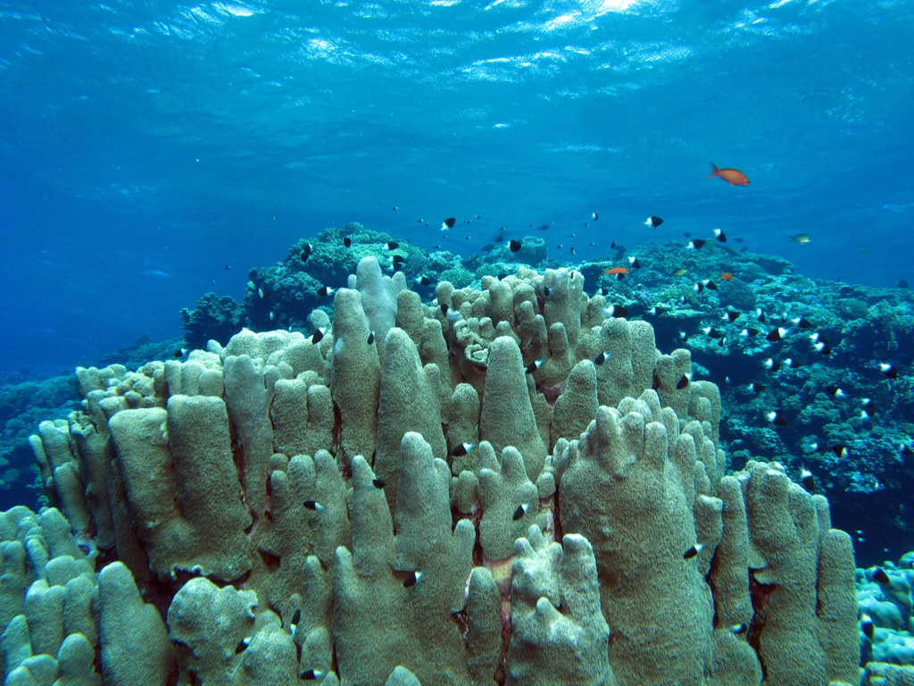
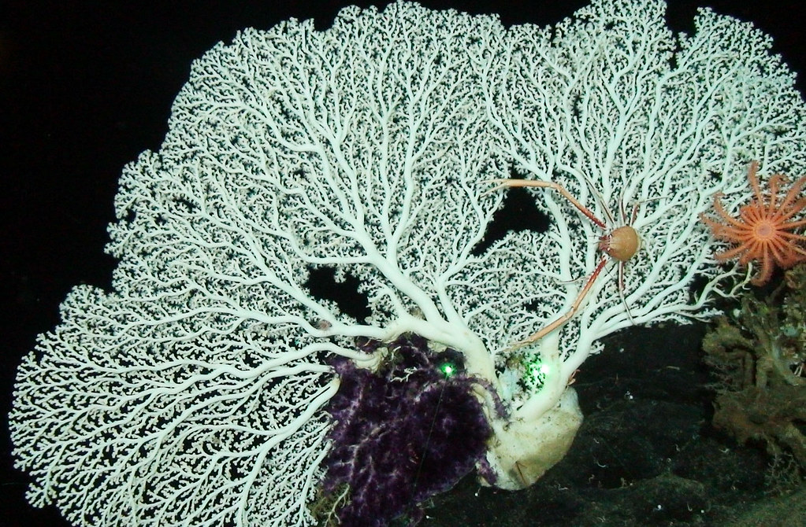

REPRODUCCIÓN SEXUAL
La reproducción de los corales es principalmente sexual.
Cerca del 25% de los hermatípicos o pétreos forman colonias unisexuales
(del mismo sexo), el resto son hermafroditas.
Por otro lado, 75% de los corales pétreos desovan por difusión,
liberando gametos al agua y así dispersas sus crías.
LARVAS
Los gametos se fusionan para dar lugar a una larva o plánula de color rosa
y con forma elíptica. En este proceso se van a formar miles de larvas para que
se garantice la formación de nuevas colonias.
En el caso de los arrecifes, se inicia el desove de forma sincronizada,
todos la misma noche. El momento preciso para la liberación de los gametos
dependerá de la especie y las señales ambientales
(ciclo lunar, temperatura, señalización química, duración del día, etc.), siendo la puesta
de sol la señal más adecuada.

INCUBADORAS
Las incubadoras son especies sexuales ahermatípicas
que liberan únicamente esperma sin flotabilidad que hundirá a los que portan huevos.
Tras la fecundación, se liberan las plánulas que están preparadas para instalarse en el suelo marino.

PÓLIPOS
Las plánulas nadan en dirección de la luz y de los sonidos emitidos por
los arrecifes, alcanzando aguas superficiales. A medida que viajan a la deriva,
irán creciendo hasta que descienden buscando una superficie dura para posarse e
iniciar la nueva colonia.
Desde el momento del desove hasta que se asienta, la larva ira creciendo hasta
que se convierte en pólipo, eventualmente podrá convertirse en una cabeza de
coral por gemación y crecimiento asexual.

DIVISIÓN
En este caso el pólipo original va a dividirse en dos y llega a ser tan grande como el
original. Cuando es longitudinal, el pólipo se ensanchará, el cuerpo se divide a lo largo,
la boca se parte y aparecen nuevos tentáculos.
La división transversal implica el fraccionamiento del pólipo y el exoesqueleto
transversalmente, en dos sesiones que deben generar las piezas faltantes por separado.
